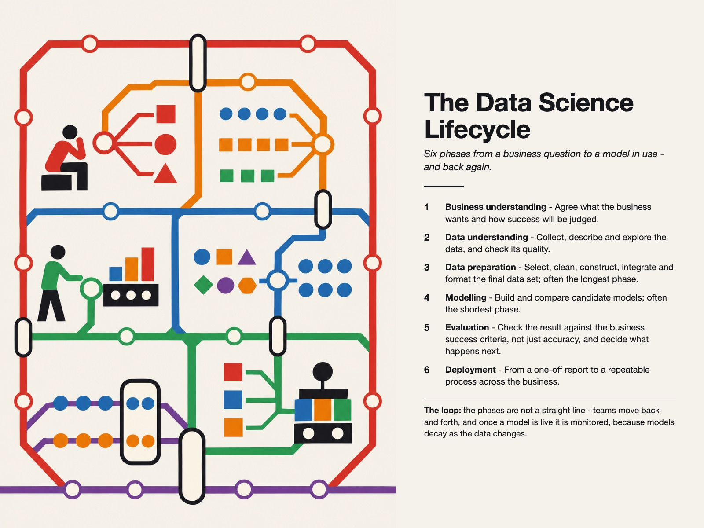

Style Vault / Board / Transit Map (Vignelli)
Transit Map (Vignelli)
SV-035

Example: The data science lifecycle, set in Transit Map (Vignelli)
In plain words
A subway-style map with straight coloured lines running at right angles and 45-degree turns, each line one colour, with neat stations and capsule-shaped interchanges where lines meet. It feels authoritative and easy to follow. The style earns its keep at the interchanges, where two lines genuinely share a stop. Best for: data and AI roadmap; career paths in data; data stack landscape; programme dependencies. Avoid: text or lettering generated inside the image.
Topics it fits
- Data and AI roadmapparallel coloured lines show several workstreams moving forward together with clear stops along the way
- Career paths in dataeach line as a role and each interchange as a shared skill shows where paths cross
- Data stack landscapeone colour per layer and capsule interchanges show exactly where tools hand off to each other
- Programme dependenciesthe interchange capsules make the points where two teams depend on each other visible to leadership
Art style and layout
- core locked [geometry, one_colour_per_line, uniform_markers, interchange_capsule, grid_discipline]
- medium flat vector SVG on cream, rendered via Chrome headless
- geometry lines run on 45/90 degrees only; clean orthogonal grid
- colour rule one bold saturated colour per line, no gradients; cream ground #F5F2EA, ink #16171B
- markers uniform station dots (circle, cream fill + line-colour ring); interchange = stadium capsule, ink outline, spanning the lines it joins
- typography Helvetica/Arial; uppercase bold for line + interchange names, sentence case stations
- hierarchy big bold title block, thin rule, map body, legend strip + interchange key, small footer
- negative space generous; lines well separated
- composition parallel horizontal field-lines; interchanges are vertical capsules at shared columns; one line as full-width "foundation
- mood authoritative, classic, information-design confident
- palette [cream "#F5F2EA, ink "#16171B, #D8322A, #E8820E, #2F6FB0, #2E9E5B, #7C4DA0]
- era reference Massimo Vignelli 1972 NYC subway diagram; International Typographic Style
What must stay, what may change
Swap the domain (any field-map: data stack, career paths, a product's surface). Keep 45/90 geometry, one-colour-per-line, uniform markers, capsule interchanges. The PAYLOAD is the interchanges - pick nodes where two lines genuinely share an idea.
As JSON
Paste this into a prompt or a skill to reuse the style.
{
"id": "SV-035",
"name": "Transit Map (Vignelli)",
"audience": [
"board"
],
"category": [
"data-viz",
"infographic",
"graphic-design"
],
"format": [
"map",
"diagram"
],
"maker": "design-build",
"keep_and_swap": "Swap the domain (any field-map: data stack, career paths, a product's surface). Keep 45/90 geometry, one-colour-per-line, uniform markers, capsule interchanges. The PAYLOAD is the interchanges - pick nodes where two lines genuinely share an idea.",
"style_dna": {
"core_locked": "[geometry, one_colour_per_line, uniform_markers, interchange_capsule, grid_discipline]",
"medium": "flat vector SVG on cream, rendered via Chrome headless",
"geometry": "lines run on 45/90 degrees only; clean orthogonal grid",
"colour_rule": "one bold saturated colour per line, no gradients; cream ground #F5F2EA, ink #16171B",
"markers": "uniform station dots (circle, cream fill + line-colour ring); interchange = stadium capsule, ink outline, spanning the lines it joins",
"typography": "Helvetica/Arial; uppercase bold for line + interchange names, sentence case stations",
"hierarchy": "big bold title block, thin rule, map body, legend strip + interchange key, small footer",
"negative_space": "generous; lines well separated",
"composition": "parallel horizontal field-lines; interchanges are vertical capsules at shared columns; one line as full-width \"foundation",
"mood": "authoritative, classic, information-design confident",
"palette": "[cream \"#F5F2EA, ink \"#16171B, #D8322A, #E8820E, #2F6FB0, #2E9E5B, #7C4DA0]",
"era_reference": "Massimo Vignelli 1972 NYC subway diagram; International Typographic Style"
},
"palette_hex": [
"#f5f2ea",
"#16171b",
"#d8322a",
"#e8820e",
"#2f6fb0",
"#2e9e5b"
],
"topics": [
{
"topic": "Data and AI roadmap",
"why": "parallel coloured lines show several workstreams moving forward together with clear stops along the way"
},
{
"topic": "Career paths in data",
"why": "each line as a role and each interchange as a shared skill shows where paths cross"
},
{
"topic": "Data stack landscape",
"why": "one colour per layer and capsule interchanges show exactly where tools hand off to each other"
},
{
"topic": "Programme dependencies",
"why": "the interchange capsules make the points where two teams depend on each other visible to leadership"
}
]
}